Apache Spark >> Column and Row
Table of Contents
In this article, we will talk about some usages of the Column and Row in Apache Spark.
※Based on Apache Spark 3.2.1
![[Apache Spark Column and Row] Introduction](/img/apache-spark_colrow.png)
Prepare data
We need to prepare some sample data first for demonstration.
Download the CSV file below
The detailed data structure is as follows.
| column | summary |
|---|---|
| id | student’s ID |
| first_name | student’s first name |
| last_name | student’s last name |
| birth | student’s birthday |
| gender | student’s gender |
| class | student’s class |
| subject | the subjects that students are learning |
| score | student’s scores of subjects |
Read the csv file
from pyspark.sql import SparkSession
spark = SparkSession \
.builder \
.appName("MyApp") \
.getOrCreate()
# Define the schema
from pyspark.sql.types import StructField, StructType, StringType, IntegerType, DateType
schema = StructType([
StructField("id", StringType(), False),
StructField("first_name", StringType(), False),
StructField("last_name", StringType(), False),
StructField("birth", DateType(), True),
StructField("gender", StringType(), True),
StructField("class", StringType(), True),
StructField("Subject", StringType(), True),
StructField("score", IntegerType(), True)
])
# Read the csv
df = spark.read.option("header", True).format('csv').load('data/student_scores.csv',schema=schema, inferSchema=False)
df.printSchema()
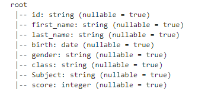
About Column
Reference a Column
We can use the col() and column() method in pyspark.sql.functions to construct a Column of Spark. The two methods both return a pyspark.sql.Column instance.
import pyspark.sql.functions as F
F.col("first_name")
Column<‘first_name’>
F.column("first_name")
Column<‘first_name’>
We can also use bracket syntax to refer a column of Dataframe as follows.
df["first_name"]
Column<‘first_name’>
Or we can refer a column by using the attribute of Dataframe object.
df.first_name
Column<‘first_name’>
Get the column name list of Dataframe
We can get the names of all columns using columns attribute of Dataframe.
df.columns
[‘id’, ‘first_name’, ‘last_name’, ‘birth’, ‘gender’, ‘class’, ‘Subject’, ‘score’]
Add a Column
There are many ways to add columns to Dataframe.
-
Add a column with the same constant value
We can use lit() function in pyspark.sql.functions to construct a constant/literal value.df.withColumn("school", F.lit("ABC SCHOOL")).show()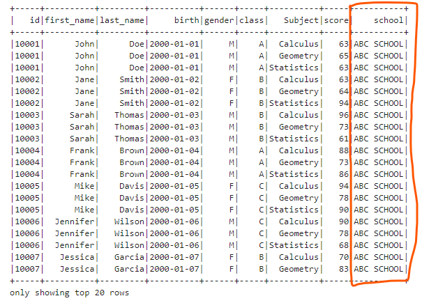
We can also add a empty(all the values are null) column.df.withColumn("empty", F.lit(None)).show()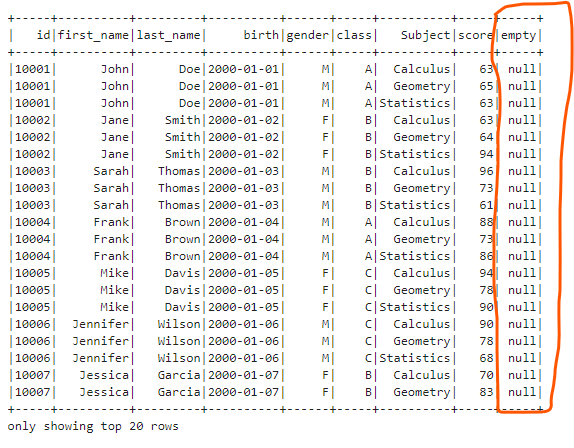
-
Add a column based an existing column
We can use concat() function to concatenate a literal and the existing last_name column.df.withColumn("greeting", F.concat(F.lit("Hello, "), F.col("last_name"))).show()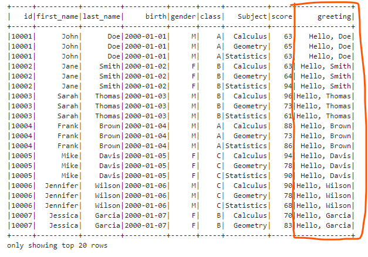
We can also add the boolean flag column which indicates a student’s class is A (true) or not (false).
We can use expr() method to evaluate two columns or one column and a value is equal or not.df.withColumn("isClassA", F.expr("class == 'A'")).show()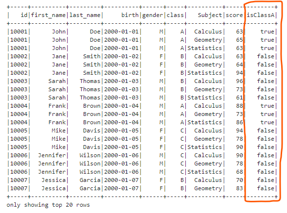
-
Add a Column Based on Condition
We can generate new columns based on existing columns and certain conditions.
We can use when() and otherwise() method to define different condition branches.df.withColumn("level", F.when(df.score >= 90, F.lit("A")) \ .when((df.score >=75) & (df.score < 90), F.lit("B")) \ .when((df.score>=60) & (df.score<75), F.lit("C")) \ .otherwise(F.lit("D"))).show()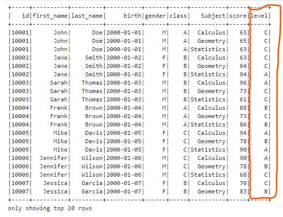
Renaming Column name
We can use withColumnReanmed() method of Dataframe to rename column name.
df.withColumnRenamed("id", "student_id").show()
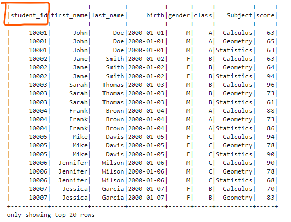
Select a Column
We can select a column by using select() method.
df.select("score").show()
# OR
df.select(F.col("score")).show()
# OR
df.select(F.expr("score")).show()
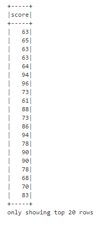
Change the column’s type
We can use cast() method to change the type of the column.
df.withColumn("score2", F.col("score").cast("long")).printSchema()
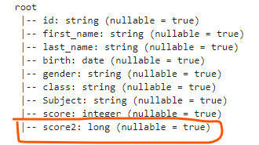
Remove a column
We can use drop() method of Dataframe to remove a column from a Dataframe.
df.drop("class").show()
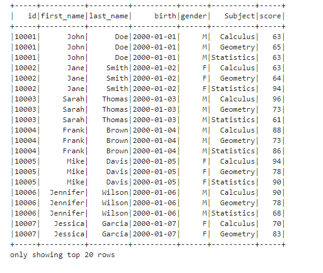
About Row
In Spark, each record is represented as a Row type.
For example, we can define a Row as follows.
Create a row
from pyspark.sql import Row
from datetime import date
newRow = Row("10007", "Jessica", "Garcia", date(2000,1,7), "F", "B", "Music", 85)
newRow
<Row(‘10007’, ‘Jessica’, ‘Garcia’, datetime.date(2000, 1, 7), ‘F’, ‘B’, ‘Music’, 85)>
Create Dataframe from row list
We can use some rows to create a Spark Dataframe.
Firstly, we can use createDataFrame() method of sparkSession to create the DataFrame.
The first parameter can be the list of rows or generated RDD object from the row list.
The schema can be get by the schema property of DataFrame.
df2 = spark.createDataFrame([newRow], df.schema)
# OR
df2 = spark.createDataFrame(spark.sparkContext.parallelize([newRow]), df.schema)
df2.show()
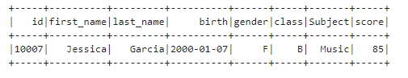
Append rows to existing DataFrame
We need to create a new DataFrame from appending rows and concatenate the new DataFrame with the existing DataFrame because DataFrames are immutable.
Firstly, let’s show all the rows of the existing DataFrame.
df.show(100)
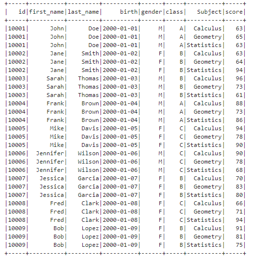
Next, let’s create a new DataFrame of same schema with the existing DataFrame.
We will find the new records are appended at the end of the concatenated DataFrame.
append_rows = [
Row("10010", "John", "Robert", date(2001,3,1), "M", "C", "Calculus", 80),
Row("10010", "John", "Robert", date(2001,3,1), "M", "C", "Geometry", 78),
Row("10010", "John", "Robert", date(2001,3,1), "M", "C", "Statistics", 66)
]
newDF = spark.createDataFrame(append_rows, df.schema)
# Concatenate the two DataFrames
df.union(newDF).show(100)
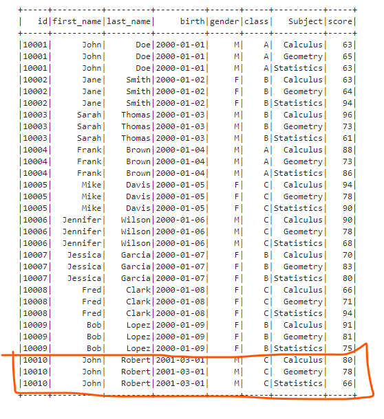
Sort rows
Sometimes we need to sort the rows in the DataFrame in a certain order to achieve our goals.
We can use the sort() method of DataFrame to sort one column or mutiple columns.
If you want to sort multiple columns and specify the ascending order for each other, you can give the column list and specify ascending flag list.
df.sort(["class", "birth"], ascending=[True, False]).show(100)
Or you can use the orderBy() method of DataFrame and specify each column and its ascending order.
df.orderBy(F.col("class").asc(), F.col("birth").desc()).show(100)
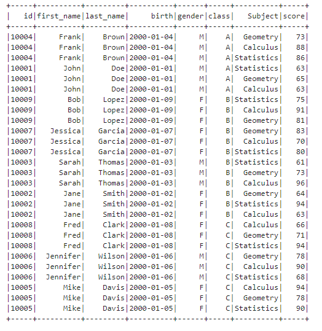
Limit row number
Sometimes, we need to restrict the row number. We can use the limit() method of DataFrame.
df.limit(10).show()
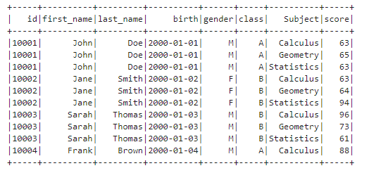
Filter Rows
Sometimes, we need to extract some rows based on some conditions.
We can use the filter() or where() method of DataFrame to filter rows.
df.filter("score > 75").show()
# OR
df.filter(F.col("score") > 75).show()
df.where("score > 75").show()
# OR
df.where(F.col("score") > 75).show()
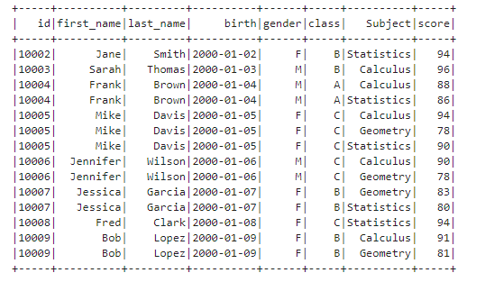
We can also chain multiple filter functions to filter rows step by step based on multiple conditions.
df.filter("score > 75").filter(F.col("Subject") == "Statistics").show()
# OR
df.filter("score > 75").where(F.col("Subject") == "Statistics").show()
# OR
df.where("score > 75").filter(F.col("Subject") == "Statistics").show()
# OR
df.where("score > 75").where(F.col("Subject") == "Statistics").show()
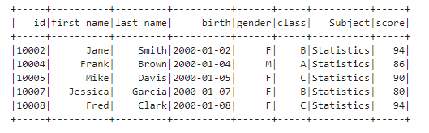
Get unique rows
We can use the distinct() method of DataFrame to get the unique rows.
For example, if we don’t use the distinct() method, let’s try to show the id, first_name, and last_name columns.
df.select("id", "first_name", "last_name").show(100)
As you can see, there are many duplicated records.
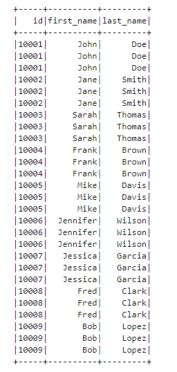
Next, let’s apply the distinct() method to the selected DataFrame.
df.select("id", "first_name", "last_name").distinct().show(100)
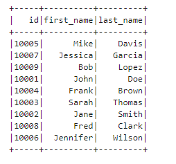
Conclusion
About Column, we talked about how to reference a column, add a column, get the list of column names, rename column name, select a column, change a column’s data type and delete a column.
About Row, we talked about how to create a row, create a new DataFrame from row list, append rows to an existing DataFrame, sort rows, limit row number, filter rows and get unique rows.
If you don’t have a local Spark development environment, you can read the article below.
Apache Spark » Create a Local Apache Spark Development Environment on Windows With Just Two Commands https://thats-it-code.com/apachespark/apachespark__create-a-local-apache-spark-development-environment-with-just-two-commands/